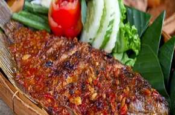

< < Daftar resep
bahan |
cara memasak
Gurame Bakar Bumbu Bali

Di Bali, banyak sekali hidangan laut yang dijajakan. Salah satunya adalah ikan bakar. Setiap daerah, punya resep ikan bakar masing-masing. Misalnya, ikan bakar jimbaran, pencar, atau gilimanuk.
Rasanya hampir mirip, yaitu pedas-manis. Ditambah daging ikan yang lembut dan cocolan sambal matah. Mantap!
Bagi anda pecinta pedas, sajian ikan bakar juga bisa dikreasikan dengan racikan bumbu pedas seperti bumbu padang, bumbu rujak, atau bumbu bali. Citarasanya dijamin akan jauh lebih sedap dan ‘menggigit’ dibanding ikan bakar kecap pada umumnya.
Bahan-bahan:
- Ikan Gurame – 600 gram
- Jeruk nipis, ambil air perasannya – 1 butir
- Garam, untuk lumuran ikan – secukupnya
- Serai, memarkan – 2 batang
- Daun salam – 2 lembar
- Asam jawa, larutkan air hangat – 1 sdt
- Garam – 1 sdt
- Gula merah serut – 1 sdm
- Minyak, untuk menumis – secukupnya
- Bawang putih – 4 siung
- Bawang merah – 8 butir
- Cabai merah – 7 buah
- Kemiri, sangrai – 4 butir
- Kunyit, bakar – 3 cm
- Jahe – 2 cm
- Ketumbar – 2 sdt
- 1/2 sendok makan ketumbar
- Tomat – 1 buah
Cara Memasak:
- Lumuri ikan dengan air jeruk nipis dan garam, lalu diamkan selama 1 jam. Cuci bersih kembali dan tiriskan.
- Panaskan sedikit minyak. Tumis bumbu halus, serai, dan daun salam hingga harum.
- Masukkan air asam jawa, garam, dan gula merah. Lanjutkan menumis hingga matang. Matikan api.
- Lumuri ikan dengan tumisan bumbu di kedua sisinya. Diamkan selama 1 jam.
- Siapkan alat bakaran/panggangan. Bakar ikan sambil sesekali dioles dengan sisa bumbu di kedua sisinya hingga matang dan harum. Angkat.
- Hias diatas piring dan Ikan Siap Disajikan
kembali keatas
< < Daftar resep